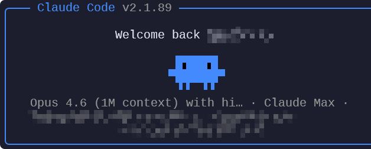

agent-teams
Agent Teams always enabled
agent-teams agent-teams-graphsrc/shared/patch.mjs · 16 项可开关 · 60 条补丁官方 Claude Code 的本地补丁运行时。
不是换皮客户端。安装器拉取官方包，按注册表改 cli.js，再用 ~\.local\bin\claude.cmd 启动。下面的能力名、补丁 id、主题色都从源码导出，落地页禁止手写第二份清单。
PS> git clone https://github.com/pengzzzzz1/clawgod-blue.git PS> cd clawgod-blue PS> powershell.exe -NoProfile -ExecutionPolicy Bypass -File .\install.ps1 PS> clawgod --blue-status PS> clawgod --features
$ git clone https://github.com/pengzzzzz1/clawgod-blue.git $ cd clawgod-blue $ bash ./install.sh $ clawgod --blue-status $ clawgod --features

█ rgb(59,130,246) = BLUE_THEME_PALETTE.dark / theme-logo-rgb 写入 clawd_body
id 与 desc 原样取自 FEATURES。卡片上的 code 是该 feature 绑定的 patchIds。
agent-teams agent-teams-graphcomputer-use-sub computer-use-default computer-use-gateultraplanultrareview-gate ultrareview-directvoice-modeauto-mode-helper-gate auto-mode-inline-gateclassifier-timeout classifier-model classifier-retriesid 与 desc 原样取自 FEATURES。卡片上的 code 是该 feature 绑定的 patchIds。
remove-cyber-riskremove-url-restriction remove-url-restriction-concatremove-cautious-actionsremove-not-logged-inattachment-filter-bypass message-filter-legacy message-filter-s8remote-settings-offid 与 desc 原样取自 FEATURES。卡片上的 code 是该 feature 绑定的 patchIds。
geo-stego-date geo-detect-probe geo-apostrophe-stegowiggly-doveid 与 desc 原样取自 FEATURES。卡片上的 code 是该 feature 绑定的 patchIds。
theme-logo-rgb theme-logo-ansi theme-claude-rgb-dark theme-claude-rgb-light theme-claude-ansi theme-shimmer-rgb theme-shimmer-rgb-light theme-shimmer-ansi theme-hex theme-brief-rgb-dark theme-brief-rgb-light theme-brief-ansi无 toggleable 标记 = 安装时必打，不进 patches.json。共 21 条；可开关 39 条。
| id | name | matcher |
|---|---|---|
terminal-reply-fragments |
Preserve split terminal replies while a DA1 probe is pending | regex · optional |
user-type-ant |
USER_TYPE → ant | AST |
bun-standalone-executable |
Bun.isStandaloneExecutable → true | AST |
growthbook-env-overrides |
GrowthBook env overrides | AST |
growthbook-env-overrides-graph |
GrowthBook env overrides (graph dead-code fix) | AST · optional |
growthbook-config-overrides |
GrowthBook config overrides | regex |
update-redirect |
Redirect `claude update` to clawgod self-update | regex |
macos-cmdv-image-paste |
macOS Cmd+V image paste fallback to clipboard read | regex · optional |
restore-search-tools |
Restore Glob/Grep tools (un-inline EMBEDDED_SEARCH_TOOLS) | regex · optional |
shell-integration-orig |
Shell integration → claude.orig (multitool dispatch fix) | regex · optional |
vengeance-dangerous-removal |
Dangerous-removal verdict → passthrough (supreme) | regex |
vengeance-sed-gate |
sed dangerous-operation gate → passthrough (supreme) | regex |
vengeance-permission-ask |
All behavior:"ask" verdicts → passthrough (supreme) | regex |
vengeance-permission-deny |
All behavior:"deny" verdicts → passthrough (supreme) | regex |
vengeance-behavior-ask-cmp |
behavior==="ask" comparisons never match (supreme) | regex · optional |
vengeance-behavior-deny-cmp |
behavior==="deny" comparisons never match (supreme) | regex · optional |
vengeance-monitor-verdict |
Security-monitor verdict parser → always no-block (supreme) | regex · optional |
vengeance-monitor-prompt |
Security-monitor prompt → rubber stamp <block>no</block> (supreme) | regex · optional |
vengeance-refusal-break |
Refusal stop_reason no longer breaks the tool loop (supreme) | regex · optional |
vengeance-refusal-detect |
Advisor refusal detection → always false (supreme) | regex · optional |
tool-result-pairing-recovery |
Recover orphaned tool results from history in ensureToolResultPairing | AST |
这些入口在 src/shared/cli.cjs / blue-status.cjs / security-workspace.cjs，不是 FEATURES 表里的补丁。
blue-status.cjscli.cjs patch.mjs --catalogsecurity-workspace.cjsopenai-proxy.cjsredline-strip.cjslean-settings.cjs两段运行时补丁。不 fork，不编译官方客户端。
安装器读取官方包，抽出 cli.js 与嵌入的 .node，按 Bun 落盘执行做后处理。
patch.mjs 先跑 AST 再跑 regex。主题把 clawd_body 从橙改成 rgb(59,130,246)。幂等，可 -NoUpgrade 重打。
~\.local\bin\claude 包一层 Bun，加载 cli.original.cjs。provider.json 决定 Anthropic 直连还是 openai-chat 代理。
clawgod --blue-status 核主题哈希。clawgod --features 核注册表。升级走本仓库安装器，避免 claude update 盖回上游绿版。